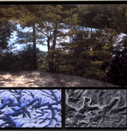
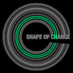
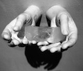

people doing strange things with electricity
The 39.06.00-th dorkbot-nyc meeting took place at 7pm on Wednesday, October 6th, 2010 at Location One in SoHo.
The meeting was free and open to the public. People brought snacks to share.
+++++++
It featured the buoyant yet melancholy:

Jack Toolin: The C5 Landscape Initiative
The Landscape Initiative considers the navigation, representation, and perception of landscape in light of growing technological mediation brought about by locative media. It is composed of four projects: Analogous Landscape, Other Path, Perfect View, and The C5 Media Player, and was produced by the art collaborative C5, formerly based in Silicon Valley. GPS, satellite imaging, computer graphics, etc. allow us to conceptualize our experience of landscape in complex ways. The four projects composing the Landscape Initiative apply navigating and mapping technologies, data mining, photography and video, as well as sculpture to conduct and convey the projects' underlying concepts. Questions explored include: How do locative media affect the phenomenological experience of the natural environment? In what ways do these technologies enhance the experience of nature? Can landscape-as-data be sublime?
http://jacktoolin.net
Melanie Crean: The Shape of Change
The Shape of Change is a series of projects that analyze the capacity of speech to produce personal and political change. The project time frame began with the election of Barack Obama, and will run in conjunction with his proposed period of demilitarization from Iraq. The series of four projects consider the depth of the relationship between language and political agency at different stages of life. The first project looks at a baby acquiring agency through language; the second investigates a young boy comprehending and describing war for the first time, the third involves college students from Iraq & the US exploring issues of power and cultural bias in their educational systems; and the final project observes how adults from Iraq & the US express the desire for political change over time. By comparing the projects as they evolve simultaneously, one can examine the relationship between language and change from a range of personal and political perspectives, through the lens of different forms of media.
http://shapeofchange.com
Caitlin Berrigan: Traces
I will be presenting on the medical, material and software meanderings in the making of "Traces," a renewable sculpture of my disembodied kidney, cast in frozen spit. Every two hours a new frozen organ is refreshed, cupped in my hands cast in aluminum, only to melt and drip away. The last ends of the kidney slip onto the floor, and a wet mess remains. I materialized the kidney by laboriously tracing the topography of my internal organ from a 3D MRI, consisting of hundreds of sequential medical images. I conceived of Traces as a poetic deterritorialization of medical biotechnologies, organs without bodies and fleshy displacements. It calls attention to the alienability of body parts and the vast global industry that sustains the promise of an infinitely repairable body.
http://caitlinberrigan.com